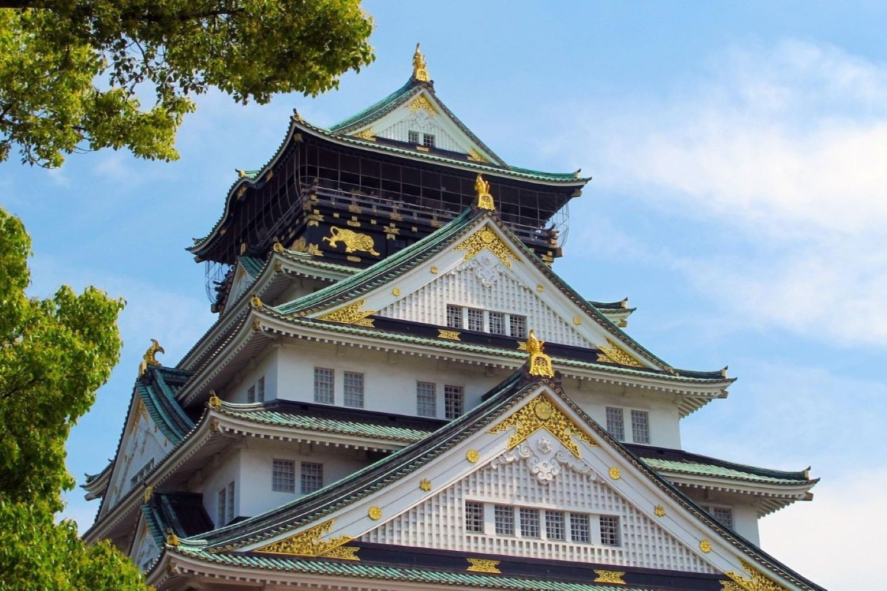
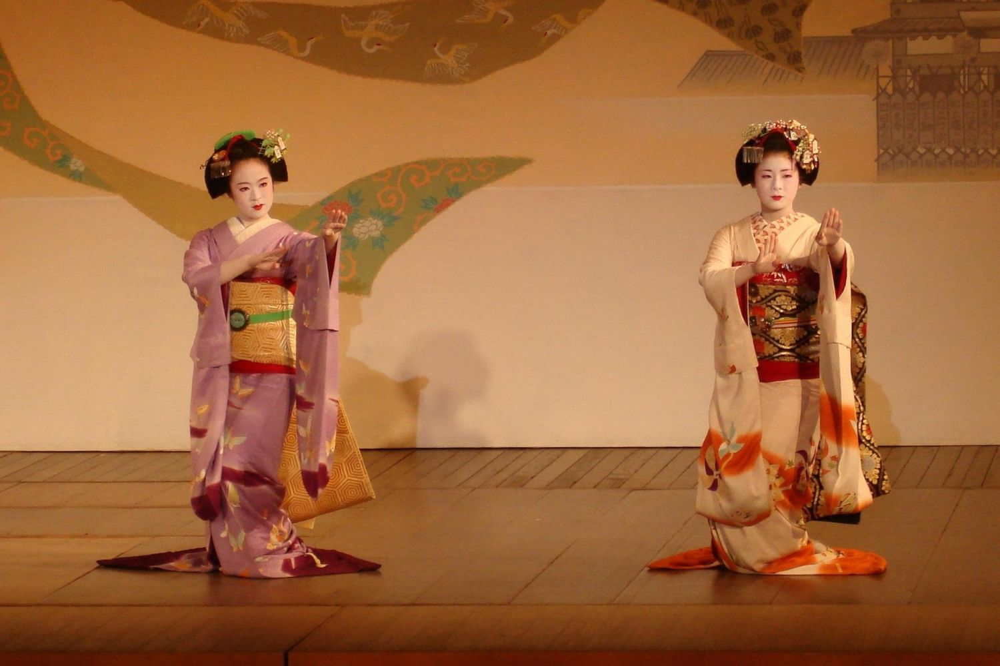
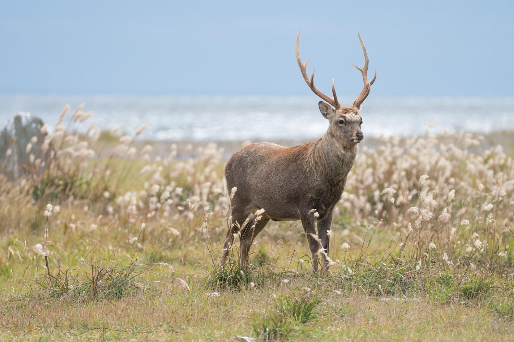

みなさん、こんにちは
Explorando la ciudad de Osaka
Osaka es energía pura: una ciudad bulliciosa, alegre y acogedora, donde cada esquina huele a comida callejera y las luces de neón compiten con el brillo de su gente. Esta ruta te llevará a descubrir lo mejor de su carácter desenfadado, entre historia, cultura pop y los sabores más auténticos de Japón.
Leer másLa historia de las geishas
Las geishas son las guardianas de una tradición centenaria, símbolo de elegancia, cultura y arte en Japón. Su mundo combina música, danza, etiqueta y hospitalidad, ofreciendo un vistazo único a la historia japonesa.
Leer másDescubriendo la prefectura de Hokkaido
Si Kioto representa la tradición y Tokio la modernidad, Hokkaido es la cara más pura de la naturaleza japonesa. Esta isla, situada al norte del archipiélago, es un paraíso para los amantes de los paisajes, los baños termales y la tranquilidad. Su encanto cambia con las estaciones: campos de flores en verano, hojas doradas en otoño y nieve mágica en invierno.
Leer más